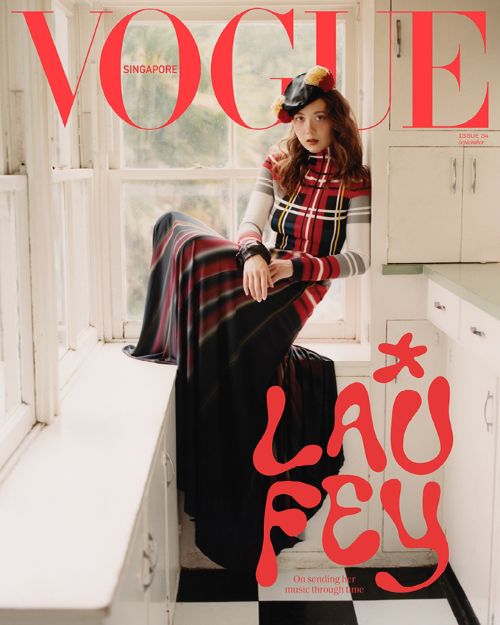

Laufey

Laufey is an Icelandic musician revolving around bossa nova jazz. She is young, beautiful, and talented, with a large fanbase of around 6 million on Instagram.
Typical of Me
Laufey first blessing this world experienced when she released her first album. With her beautifully woven rhythms and enchanting melodies, casting a timeless spell that continues to stir hearts and paint emotions in every note.
- Street by Street
- Magnolia
- Like the Movie
- I Wish You Love
- James
- Someone New
- Best Friend
Everything I Know About Love
Laufey then began to release an album the following year. Furthermore, inserting her legacy in people's minds.
- Fragile
- Beautiful Stranger
- Valentine
- Above the Chinese Restaurant
- Dear Soulmate
- What Love Will Do to You
- I've Never Been in Love Before
- Falling Behind